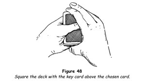
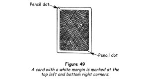
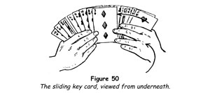

Centuries ago, when playing cards were rare and valuable objects owned only by the rich and powerful, the first tricks of legerdemain with cards were made possible through the use of the key card. The principle is so obvious that there are few card magicians who are not familiar with it, and yet some of the finest and most deceptive card tricks, which have puzzled and entertained hundreds of thousands of people, are made possible by the lowly key card.
We speak of the key card as lowly because it has fallen into disrepute on account of its being so widely known. Using it inartistically is a gaucherie, yet if used with finesse it is one of the most potent artifices in the whole realm of conjuring with cards. In this, as in many other things, it is not the tool that is important but the personality, character and intelligence of the person using the tool. Using the same tools, one artist produces an exquisite portrait; another, a meaningless daub. So it is with the key card; the dabbler performs a colourless trick, the competent conjuror presents a brilliant tour de force.
Perhaps even before opening this book, you were familiar with the principle that if you know the name of one card in the pack, and contrive to have an unknown card replaced either above or below it, you can unfailingly find the unknown card, no matter how many times the pack may be cut. This is the manner in which the dabbler at card tricks uses this principle.
But we shall show you how this same principle may be used in such a manner that even those familiar with it will be completely deceived. We shall give you the mechanics of tricks with the key card that make use of the principle in new and ingenious ways, and shall show you how the old methods may be used so that they appear new and different. Finally, we shall show you that use of the key card will enhance your reputation as a clever sleight of hand performer with cards, whose deceptions are entertaining and unsolvable.
First, however, we must explain the key undercut and key undercut shuffle, two useful sleights which have been described, but not by name, in Gray's Spelling Trick.
The Key Undercut
This method of undercutting a pack is often used to place a key card above a chosen card, and we give it the above title to distinguish it from the regular undercut used in the overhand shuffle, with which it must not be confused.
1. Let us say that you have glimpsed the card at the bottom of the pack for use as a key card. Hold the deck by its sides at the tips of your left thumb and your middle and ring fingers. Draw out the lower half with your right thumb and your middle finger by grasping it at the sides near the inner corners.
2. Let the packet remaining in your left hand fall on to the palm and extend that hand for the replacement of the chosen card on top.
3. Immediately drop the right-hand packet on it and square the deck very openly, thus placing your key card above the chosen card (figure 48). Be careful to hold the right-hand packet face downwards and do not glance at it. Some performers take a glimpse of the bottom card at this time, but this is a very bad practice widely open to detection.

Key Undercut Shuffle
The purpose of this shuffle is to mix the cards without separating the key card from the card that it keys. It should be used after the key undercut whenever possible.
Lift the whole pack and freely shuffle off about one-third of the cards, let another third of the cards fall in a block and then shuffle the remaining cards freely. Thus the two cards at the centre must remain together.
A genuine overhand shuffle is not likely to separate the cards, but the above method makes their juxtaposition a certainty.
TRICKS WITH THE KEY CARD
Do As I Do
There are some good tricks that stand head and shoulders above others and the following is just such a trick. It has everything a good trick should have - a good plot, ease of execution and a terrific impact on those who see it. We have mentioned that the wise magician never reveals his or her methods to the curious, and in describing this trick we reiterate this counsel, because once you have told how simple the trick is, you have lost the use of a superb feat of card magic.
This is the plot. A spectator thinks of a card and you think of one. You each show the card of your choice. They are the same!
1. You will need two packs, with backs of contrasting colours, say red and blue. Invite a spectator to choose one of the two packs. You take the other and shuffle it. 'I want you to do everything I do. Please shuffle your cards.' Turn your pack with the face towards yourself a little as you square it after shuffling, and remember the bottom card as your key card.
2. Hand the spectator your pack and take his. 'I'll take your pack and you take mine,' you say. Ribbon-spread your cards face downwards on the table from right to left and instruct him to do the same with his cards.
3. 'Remember, you must do everything I do. First of all, each of us will take a card from his pack. You will take one from the pack that I shuffled, hence you cannot possibly know beforehand which one you will take. Similarly, I will take one from the pack that you shuffled, and I therefore cannot know which one I shall get.' Run your right index finger back and forth over your line of cards and insist that he duplicate your actions exactly. After a moment, touch a card in the centre of the spread and have him touch one in his spread. 'Take out the card you touched, look at it, but don't let anyone else see it,' you say. You say this because you do not want any of the others standing around to see the card you draw. Look at it but forget it, for it plays no part in the trick.
4. Place your card face downwards at the left end of your spread of cards and have him do the same with his cards. Gather your cards without disarranging them and have him do the same. Make one complete cut; this places the key card that you noted in step 1 above his chosen card.
5. 'Let's exchange packs again,' you say, taking his pack and giving him yours. 'Now I'll find my card while you find yours.' Run through the pack you now hold until you come to your key card, then take the card below it and place it face downwards on the table. Try to have your card placed on the table before he finds his card.
6. When he removes his card, have him place it face downwards on your card, but at right angles. Take the rest of his cards and place them at right angles on your pack, both groups of cards facing downwards. Do this deliberately and neatly, adjusting the cards until you are satisfied that they are placed exactly as you want them. This is window dressing, but it is important.
Now recapitulate what has been done. 'You will remember that you did exactly as I did. You shuffled my pack and I shuffled yours. We each took a card and remembered it. I have placed my card on the table and so have you. Would you be surprised if we both took the same card?'
7. The spectator admits that he would indeed be surprised. Do not say anything further, but slowly pick up the two crossed cards and drop them face upwards on the table. They are the same!
The Three Piles
The use of delay in performing a sleight is of great value to the conjuror. A moment's consideration will make it clear that to attempt to perform sleights at the start of a trick, when the attention of the onlookers is concentrated on your actions, is poor strategy and invites disaster. The element of surprise also is of inestimable value. The use of delay to gain surprise is applied here to the use of the key card, and the result is that even those who are familiar with it will fail to recognise its use.
Briefly, the plot of the trick is that a card that has been merely thought of is discovered and revealed by the magician in an impressive and surprising fashion.
1. Have a spectator shuffle a pack of cards and cut it into three portions, about equal, while your back is turned. Instruct him to choose any one of the three piles, then to take it and, spreading its cards with the faces towards himself, select mentally any one card and commit it to memory. When he has done this, tell him to shuffle the cards he holds so that he himself will not know the position of his mentally selected card among the others.
2. Turn around and say, 'I think your card is about twelfth from the top. Deal the cards face upwards and see if I'm right, but don't tell me where the card is if I'm wrong.' Begin to turn away again but contrive to sight the first card the spectator deals, then turn away completely. The first card is your key card; remember it. Later, the spectators will forget that you turned around for a moment and will maintain that your back was turned all the time. This is the impression you wish to make.
3. When he has completed the deal, the spectator tells you that you were wrong. 'Oh, well,' you say, shrugging off your supposed mistake, 'it makes very little difference.'
4. Instruct the spectator to place his pile on the table, take the other two piles and shuffle them together; cut the packet, place his pile on the lower portion and then replace the cut. Finally, tell him to square up the pack and make as many complete cuts as he likes.
5. Turn around, take the pack and run over the faces as you make some casual remark, such as, 'Well, you certainly mixed the cards thoroughly,' or, 'I forgot to notice if the joker is in this deck.' In reality, you find your key card and count five cards below it and casually cut the pack at this point. Your key card will now be the sixth card from the bottom of the pack. Put the deck on the table face downwards.
6. Review briefly what has been done - a card merely thought of, the pack shuffled and cut several times, and all done while your back was turned. Then add ruminatively, 'You will remember that I failed to name the card's correct position in the deck. I don't understand that - just how far down was it?' This question does not seem important and your tone and inflection imply mild interest only. Actually the spectator's reply tells you the present position of his card.
7. If he states that its position was sixth, then the required card is now at the bottom of the deck; if seventh, at the top. In such instances you bring the trick to a surprising finish at once by showing either the top or bottom card. If the position was from the first to fifth, take the pack in position for the glide and remove cards from the bottom. When you come to the spectator's card, glide it back and continue to deal cards. Ask the spectator to call 'Stop!' Remove his card and place it face downwards on the table. Have him name the card he thought of, then slowly turn that card face upwards.
If, however, the position was higher than seven, spread the cards and run your forefinger over them, hesitating now and then, and finally stopping at the right card.
Merely producing a card that was thought of makes a surprising finish to the feat, but it will afford the student excellent practice to devise more astonishing methods for revealing it.
The Twenty-Sixth Card
We have considered the use of key cards in close proximity to a chosen card; now we should like to tell you of a most ingenious application of the key card principle - that of the remote key.
1. You must know the name of the card twenty-sixth from the top of a pack of fifty-two cards. Let us say that this card is the four of spades. Place the pack before a spectator at A. Have him cut off about two-thirds of the pack and place these at B. Finally, have him cut off the upper half of B and place these cards at C. The four of spades, your key card, is somewhere in the middle of packet B.
2. Now instruct him to take packet C and shuffle it well, then look at and remember its top card, replacing the packet at C. 'Please remember that you first shuffled the cards and then looked at the top card. There is no possible way in which I can know the card of which you are thinking.'
3. Next have him pick up the packet at A, shuffle it well and place this on packet C. 'Your card is lost,' you point out. 'I give you my word I do not know what it is or where it is at this moment.'
4. Finally, have him pick up the combined packet A-C and place it on B, then give the assembled pack one or two complete cuts.
5. Take the cards and run through them with their faces towards yourself until you come to the four of spades, your key card. Calling this card number one, count to the left until you arrive at the twenty-sixth card above it. Should your count take you to the top card before you reach the twenty-sixth card, continue the count from the bottom card. This card, the one twenty-sixth above your key card, will be the spectator's card.
6. Cut the cards at this point, taking all the cards above the spectator's card in your left hand and the remainder in your right hand, holding the hands widely separated. Glance from one packet to the other, shake your head a little, doubtfully, and move a step or so forwards as you say, 'I'll try to find it another way.' At the same moment bring your two hands together, placing the cards in the right hand above those in the left and in this manner placing the spectator's card at the top of the pack.
7. Take the pack in your right hand, holding it at the ends between the fingers and the thumb, at the same time pushing the spectator's card at the top 25 mm (1 in) off the pack to the right. 'Please name your card.' Raise your right hand and toss the pack into the left hand. As it falls, air pressure against the protruding top card will cause it to turn over so that when the pack drops into the left hand, the card will be face upwards. 'There it is!' you exclaim. The effect is that you threw the deck into the left hand and the spectator's card somehow popped, face upwards, to the top.
A Meeting of the Minds
This impressive feat may well pass as a demonstration of genuine mind reading.
1. Note the bottom card of the pack for use as a key card and shuffle it to the top in the course of an overhand shuffle; then spread the cards from hand to hand, asking someone to remove a group of cards from the centre and leaving to chance the number he will take. Square the remainder of the pack and place it to one side.
2. Take the spectator's packet of cards and pass them one by one from your left hand to your right hand, faces towards the spectator, asking him to think of one of them. Turn your head away as you do this but silently count the cards so that you know how many there are in the packet.
3. Hand the packet to the spectator, then move away a few paces and turn your back. Instruct him to remove his card and place it face downwards to one side, then shuffle the remainder of the packet and replace it on the deck and consequently upon your key card. Finally, have him place his selected card on top of all.
4. Have him cut off about two-thirds of the pack, then place the cut to one side; take the lower portion, shuffle it and place it on top of the other portion; make one complete cut.
5. Returning, take the pack and recapitulate what has been done. 'You will remember that you have thought of a card and replaced it in the pack after shuffling and cutting. You are the only person present who knows the name of the card of which you are thinking. If you doubt this, say so at this time. You are satisfied that no one else can know the name of your card? Good. Therefore it is impossible that a confederate could transmit its name to me. I assure you that I have never found it necessary to employ confederates and would find it distasteful, but this trick is so amazing that some people afterwards think that this may have been the case. I mention it only to forestall such criticism.
'Others have claimed that I do not really succeed in the feat, but that the spectator who thinks of the card, through courtesy and a kindly desire not to embarrass me, agrees that the card I show is his when it is not. For this reason I shall ask you to write the name of the card of which you are thinking on a slip of paper or an envelope, being careful that no one sees the writing. In this way all of us will know whether I fail or succeed.'
6. When this has been done, continue, 'Finally, some people have claimed that I study the expression of the person who thought of the card and by this means learn which is the proper card. To forestall that criticism, I shall turn my head away from you, so that I cannot see you. Under these conditions, which are the fairest that I can devise, I shall show you the cards and when you see your card I will ask you to think “That is my card,” and will attempt to pick up your thought.
Turn your back and hold the cards well above your right shoulder so that everyone can see them. Push the cards off the face of the pack one by one with the left thumb, taking them in the right hand and allowing sufficient time for each card to be seen by the spectators. When your key card comes into view silently count the next card as one and count off as many cards as you counted in step 2. The last of these is the spectator's card.
7. 'I think I have your thought,' you say, holding the card aloft. 'This is your card!' The spectator acknowledges that this is so, and you have him hand the slip on which he wrote its name to someone, who reads it aloud and thus certifies to the success of your experiment.
Sincerely presented, the feat is most impressive.
The Non-Poker Voice
In this trick, too, the key card reveals the position of a chosen card.
1. Before you begin, remove from the pack and pocket any four cards, one of which is a heart. Place six cards of the heart suit at the top of the pack and the remaining six at the bottom.
2. Assert that you are convinced that there is no such thing as a poker voice; that, no matter how a person may school himself, he cannot keep the inflections that betray the inner emotion from his voice. You claim further that you can infallibly determine which of a number of cards a person may be thinking of merely by listening to his voice as he calls out the names of the cards of a pack.
3. To offer proof of your assertion, hand someone the prepared pack of cards, turn your back and walk away as you request the spectator to deal six piles of cards, one by one from left to right in turn, thus secretly placing a heart at the top and bottom of each pile. This done, instruct him to remove any card from any one of the piles, show it to the others present and drop it at the top of one of the other five piles. Next, have him gather the piles in any order he likes, without disarranging the cards, and cut the pack two or three times, completing each cut.
When this has been done there will be six pairs of cards of the heart suit, side by side, spread at intervals throughout the pack. Between one of these pairs there will be an indifferent card, and this will be the chosen card.
4. Instruct the spectator to take the cards in his hands and, while you still have your back turned, to call out the names of the cards one by one. Warn him that although he may attempt to make his voice expressionless, you will detect the name of his card from the tone of his voice when he names it.
5. As he calls out the names of the cards, pretend to listen attentively. Whenever he names cards of the heart suit, note if a card of another suit intervenes; for example, he may call, 'Nine of spades, ten of diamonds, four of hearts, seven of spades, nine of hearts.' The intervening card, in this case the seven of spades, will be his card. Let him call off a half dozen cards more and then stop him.
'You have already named your card. That's right, isn't it?' you say.
'Yes.'
'A few moments ago, when you named the spade suit, your voice quivered almost imperceptibly. Your card is a spade. That's correct?'
'It is.'
'When you named the value of this spade card, your throat tightened. Do you remember? You were afraid that I would know that the seven of spades was the card. That's correct, is it not?'
He agrees that it is. You say, 'A word of caution: be careful in poker games!' Take the pack from him, shuffle it absent-mindedly and place it to one side, thus destroying any possible clues to your method.
Intuition With Cards
The key cards that have been discussed thus far have been those in which it is necessary to see the faces of the cards. There are many tricks in which this is not desirable, and we shall now explain how the key card principle may be used when only the backs of the cards are seen.
Using a pack with a white border, take a soft pencil and place two small, light dots on the back of the card at the top left and bottom right corners (figure 49). You can find this card easily and quickly in running through the pack, because you know what to look for, but your audience will never notice the dots.

The dotted key card may be used in place of the face key card in many tricks, and we leave it to your ingenuity to make use of the idea. The following feat is an example of the use to which it can be put.
1. Let us say that you are about to perform with a borrowed pack. Surreptitiously remove any two cards and place them in your pocket, then find an excuse to leave the room for a moment. Place the key pencil dots on the back of one of the cards and write your initials on the face of the other. Remember the name of the latter card. Returning to the room, replace the cards at a propitious moment, with the dotted key card at the bottom and the initialled card just above it.
2. Riffle shuffle the pack without disturbing the two cards at the bottom. Place the pack on the table and have a spectator cut off a portion from the top. Take this packet and invite him to take the other packet.
3. Ask him to turn his back to you and to remove any card from the middle of his packet and place it face upwards at the top. Tell him that you will do the same thing and that both of you must synchronise your actions and thoughts if the test is to succeed. Instruct him to write his initials on the face of his card while you do the same with your card. Pretend, for the benefit of the others present, to initial your card, but actually write nothing. The spectator, on the other hand, actually initials his card.
4. Next ask him to turn his card face downwards on his packet as you do the same thing with yours. Finally have him make one complete cut, as you also make a cut. His cut places his initialled card one card below the dotted key card.
5. Turn to face him and request him to visualise his card, explaining that you are forming a mental picture of your card. 'This is an experiment in sympathetic action,' you comment, 'and if it is to succeed you must conscientiously try to make it succeed by obeying your first impulse from now on.' Spread your cards face downwards on the table. 'I will ask you to remove any card from my packet. Place your forefinger on any card and draw it from the spread.' When he has done this, continue, 'Now take that card and, without looking at it, thrust it into the middle of the cards you hold.'
6. This done, tell him that you will remove one card from his packet. Take his cards and spread them ribbonwise, face downwards, from left to right. Pass your forefinger over this spread of cards, find the dotted key card and drop your finger on the card to its left. This will be his initialled card. 'I will take this card.' Draw the card from the spread, thrust it face downwards in the middle of the cards you hold, without showing its face.
7. 'Now,' you say, 'if our thoughts have been attuned, you have drawn my card, the four of spades (here you name the card you have initialled) and I have drawn yours. Let's see if this is the case.' Spread your cards face upwards and push out the card which he initialled. Have him spread his packet and he finds the card with your initials!
Sliding Key Card
We have reserved to the last one of the finest and most deceptive methods of placing a key card above a chosen card. You will see at once that it can be put to use in some of the preceding tricks, but we thought it wisest to give you this method last, leaving it to your ingenuity to put it to good use.
In this sleight the key card is moved to any part of the pack at which it may be required. Let us suppose that you secretly glimpse the bottom card and you are about to use it as a key card.
1. Execute an overhand shuffle, retaining the bottom card in position. Spread the cards between your hands and have a card freely selected.
2. Square the deck and overhand shuffle again in the same way while the spectator is noting his card.
3. Spread the cards between your hands for the return of the chosen card, but in doing so, with the tips of your right fingers underneath the spread, slide the bottom card to the right so that it lies underneath the spread of the other cards and is hidden by them (figure 50).

4. Extend your hands, with the cards spread thus, towards the spectator and invite him to thrust his card into the deck. When he does this and the card is partially inserted, drop your left thumb on it, hold it and the cards in your left hand, and with your right hand remove all the cards to the right of it, including the key card. Thus the key card becomes the bottom card of the packet in your right hand.
5. Drop the right-hand packet on those in the left hand and you have your key card above the selected card. Square the deck, and the most critical observer will be satisfied that he has replaced his card fairly and that you cannot know its position among the others.